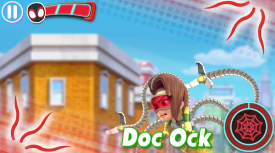

Conoce a Spidey y sus
sorprendentes amigos
Spidey, nuestro lanzador de telarañas favorito se une a Ghost-
Spider (Gwen Stacey)
y Miles Morales para formar el equipo de
Spidey, con la ayuda del cómico pero leal robot de Spidey,
TRACE-
E. Si Spidey se encuentra en una situación difícil donde necesita
aún más poder de superhéroe,
tengan la seguridad de que un
amigo de los Vengadores correrá para ayudar.


Peter Parker, un joven huérfano neoyorquino que adquiere superpoderes después de ser mordido por una araña radiactiva, y cuya ideología como héroe se ve reflejada primordialmente en la expresión ”un gran poder conlleva una gran responsabilidad”.

Tras la muerte de Peter Parker, es quien toma la identidad de Spider-Man. La elección del presidente Barack Obama en enero de 2009, fue una fuente de inspiración para el cambio de etnicidad de Spider-Man.

El personaje es una variante de El Hombre Araña, una versión de universo alternativo de Gwen Stacy. Ella reside en la "Tierra-65", donde, en lugar de Peter Benjamin Parker, Gwen Stacy fue mordida por la Araña Radiactiva


Los vengadores
acompañando tu
aventura


Mas amigos, mas diversión!

Mas de 100 misiones para que juegues sin parar!
Tus padres, contentos. Explora el emocionante mundo de Spider-Man con más de 100 misiones que te mantendrán en constante acción y adrenalina. Enfréntate a desafíos únicos, desentraña misterios, y ayuda a Spider-Man a mantener la paz en la ciudad mientras te sumerges en la piel del héroe arácnido. ¿Tienes lo que se necesita para superar todas las misiones y convertirte en el auténtico Spider-Man?

Escenas deslumbrantes que te sorprenderán
Sumérgete en un universo de maravillas visuales con 'Spider-Man: [nombre del juego]'. Nuestro juego te llevará a través de escenas deslumbrantes que te dejarán sin aliento. Desde los rascacielos de Nueva York hasta los intrincados detalles de la vida de Peter Parker, cada rincón de este mundo te sorprenderá. Prepárate para una experiencia única que desafiará tus expectativas y te transportará a un asombroso viaje con el Hombre Araña.

Cada misión te dará puntos que no sirven para nada!
Cada misión es una oportunidad para vivir la emocionante vida del Hombre Araña, y aunque los puntos que ganarás no tengan un propósito específico, la verdadera recompensa está en la diversión y la inmersión que experimentarás en cada desafío. No necesitas acumular puntos para sentirte como un auténtico superhéroe, ya que la adrenalina de salvar la ciudad y la emoción de las acrobacias en el aire son más que suficientes. ¡Así que prepárate para sumergirte en la acción y la aventura, sin preocuparte por los puntos, y vive la experiencia definitiva de Spider-Man!
Derrota a los villanos y diviértete
la diversión está asegurada mientras te enfrentas a los infames villanos de la ciudad de Nueva York. Enfréntate a desafíos épicos, combate a tus enemigos más temibles y disfruta de una experiencia llena de acción y emoción. Cada encuentro con los villanos te sumergirá en una batalla trepidante y te llevará más cerca de convertirte en el auténtico Hombre Araña. Así que, ¿estás listo para derrotar a los villanos y sumergirte en la aventura definitiva de Spider-Man?"
”un gran poder conlleva una gran responsabilidad”


Lo último de SPIDEY Y SUS
AMIGOS en tu buzón de
correo electrónico
Al inscribirse en nuestra lista de correo, nos autoriza a ponernos en contacto con usted para enviarle ofertas y actualizaciones de marketing por correo electrónico, y también acepta nuestra Política de privacidad y las Condiciones del servicio.